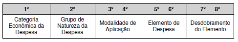
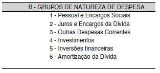
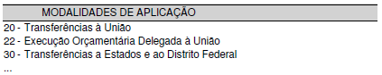
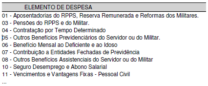

Para a elaboração da programação orçamentária da Despesa Pública o ponto de
partida levará em conta as informações definidas no PPA e na LDO.
Nesse aspecto, vale salientar que os instrumentos de Organização e de Programação,
que correspondem à Classificação Programática do Orçamento Público ou LOA
(Programas, Projetos, Atividades e Operações Especiais), já foram objeto de
conceituação nos manuais do PPA e LDO e constituem parte integrante das
referidas peças orçamentárias.
A programação orçamentária da despesa pública resulta da combinação de três
tipos de Classificação: a Classificação Institucional, a Classificação
Funcional-Programática e a Classificação Econômica.
Dessa maneira, em se tratando da programação orçamentária da despesa pública,
deverão ser contempladas, para os fins desejados, informações que levem em
conta aspectos de natureza institucional, funcional-programática e econômica.
5.1 - Classificação Funcional da Despesa
A classificação funcional (funções e subfunções) busca responder basicamente à
indagação “em que” área de ação governamental a despesa será realizada. Cada atividade,
projeto e operação especial identificará a função e a subfunção às quais se
vinculam. A atual classificação funcional foi instituída pela
Portaria no 42, de 14 de abril de 1999, do então Ministério do Orçamento e Gestão, e
é composta de um rol de funções e subfunções prefixadas, que servem como agregador
dos gastos públicos por área de ação governamental nas três esferas de
Governo. Trata-se de uma classificação independente dos programas e de
aplicação comum e obrigatória, no âmbito dos Municípios, dos Estados, do
Distrito Federal e da União, o que permite a consolidação nacional dos gastos do setor público.
5.1.1 - Função:
A classificação funcional é representada por cinco dígitos. Os
dois primeiros referem-se à função, que pode ser traduzida como o maior nível
de agregação das diversas áreas de atuação do setor público. A função está
relacionada com a missão institucional do órgão, por exemplo, cultura, educação,
saúde, defesa, etc. A função “Encargos Especiais” engloba as despesas em relação
às quais não se pode associar um bem ou serviço a ser gerado no processo produtivo
corrente, tais como: dívidas, ressarcimentos, indenizações e outras afins,
representando, portanto, uma agregação neutra. Nesse caso, as ações estarão
associadas aos programas do tipo "Operações Especiais" que correspondem aos
códigos abaixo relacionados e que constarão do orçamento.
"Art. 8º A dotação global denominada “Reserva de Contingência” permitida para a União no
art. 91 do Decreto-Lei nº 200, de 25 de fevereiro de 1967
, ou em atos das demais esferas
de Governo, a ser utilizada como fonte de recursos para abertura de créditos adicionais
e para o atendimento ao disposto no art. 5º, inciso III, da
Lei Complementar nº 101, de 4 de maio de 2000,
sob coordenação do órgão responsável pela sua destinação, bem como a Reserva
do Regime Próprio de Previdência do Servidor - RPPS, quando houver, serão identificadas
nos orçamentos de todas as esferas de Governo pelos
códigos “99.999.9999.xxxx.xxxx” e “99.997.9999.xxxx.xxxx”, no que se refere às
classificações por função e subfunção e estrutura programática, onde o “x”
representa a codificação das ações e dos respectivos detalhamentos."
5.1.2 - Subfunção:
A subfunção, indicada pelos três últimos dígitos da
classificação funcional, representa um nível de agregação imediatamente inferior
à função e deve evidenciar cada área da atuação governamental, por intermédio da
agregação de determinado subconjunto de despesas e identificação da natureza básica
das ações que se aglutinam em torno das funções. As subfunções podem ser combinadas
com funções diferentes daquelas às quais estão relacionadas na
Portaria no 42, de 14 de abril de 1999.
As ações devem estar sempre conectadas às subfunções que representam sua área
específica. Existe também a possibilidade de matricialidade na conexão
entre função e subfunção, ou seja, combinar qualquer função com qualquer
subfunção, mas não na relação entre ação e subfunção. Deve-se adotar como
função aquela que é típica ou principal do órgão. Assim, a programação de um órgão,
via de regra, é classificada em uma única função, ao passo que a subfunção é
escolhida de acordo com a especificidade de cada ação. A exceção à matricialidade
encontra-se na função 28 – Encargos Especiais e suas subfunções típicas que só
podem ser utilizadas conjugadas.
5.1.3 - Estrutura Programática da Despesa:
Toda ação do Governo está estruturada
em programas orientados para a realização dos objetivos estratégicos definidos
para o período do Plano Plurianual – PPA, que é de quatro anos.
5.1.3.1. Programa:
O programa é o instrumento de organização da atuação
governamental que articula um conjunto de ações que concorrem para a concretização
de um objetivo comum preestabelecido, mensurado por indicadores instituídos no
plano, visando à solução de um problema ou o atendimento de determinada necessidade
ou demanda da sociedade. O programa é o módulo comum integrador entre o plano e o
orçamento. A organização das ações do Governo sob a forma de programas visa proporcionar
maior racionalidade e eficiência na administração pública e ampliar a visibilidade
dos resultados e benefícios gerados para a sociedade, bem como elevar a transparência
na aplicação dos recursos públicos.
5.1.3.2. Ação:
As ações são operações das quais resultam produtos (bens ou serviços),
que contribuem para atender ao objetivo de um programa. Incluem-se também no conceito
de ação as transferências obrigatórias ou voluntárias a outros entes da federação e
a pessoas físicas e jurídicas, na forma de subsídios, subvenções, auxílios,
contribuições, doações, etc, e os financiamentos. As ações, conforme suas
características, podem ser classificadas como atividades, projetos ou operações especiais.
a. Atividade:
É um instrumento de programação utilizado para alcançar o
objetivo de um programa, envolvendo um conjunto de operações que se realizam
de modo contínuo e permanente, das quais resulta um produto ou serviço necessário
à manutenção da ação de Governo. Exemplo: “ e Monitoramento das Operadoras
de Planos e Seguros Privados de Assistência à Saúde”
b. Projeto:
É um instrumento de programação utilizado para alcançar o
objetivo de um programa, envolvendo um conjunto de operações, limitadas
no tempo, das quais resulta um produto que concorre para a expansão ou o
aperfeiçoamento da ação de Governo. Exemplo: “ da rede nacional de bancos de leite humano”.
c. Operação Especial:
Despesas que não contribuem para a manutenção, expansão ou
aperfeiçoamento das ações de governo, das quais não resulta um produto, e não gera
contraprestação direta sob a forma de bens ou serviços.
5.2 - Natureza de Despesa
Os arts. 12 e 13 da Lei no 4.320, de 1964, tratam da classificação da despesa
por categoria econômica e elementos. Assim como no caso da receita, o art. 8o
estabelece que os itens da discriminação da despesa mencionados no art. 13 serão
identificados por números de código decimal, na forma do Anexo IV dessa Lei,
atualmente consubstanciados no Anexo II da Portaria Interministerial no 163, de 2001.
O conjunto de informações que formam o código é conhecido como classificação por
natureza de despesa e informa a categoria econômica, o grupo a que pertence, a
modalidade de aplicação e o elemento.
Nas bases dos sistemas informatizados, o campo que se refere à natureza
de despesa contém um código composto por oito algarismos:

5.2.1 - Categoria Econômica da Despesa:
A despesa, assim como a receita, é
classificada em duas categorias econômicas, com os seguintes códigos:
5.2.2 - Grupo de Natureza da Despesa:
É um agregador de elementos de despesa
com as mesmas características quanto ao objeto de gasto, conforme discriminado a seguir:

5.2.3 - Modalidade de Aplicação:
A modalidade de aplicação destina-se a indicar se
os recursos serão aplicados mediante transferência financeira, inclusive a decorrente
de descentralização orçamentária para outras esferas de Governo, seus órgãos ou
entidades, ou diretamente para entidades privadas sem fins lucrativos e outras
instituições; ou, então, diretamente pela unidade detentora do crédito
orçamentário, ou por outro órgão ou entidade no âmbito do mesmo nível de
Governo. A modalidade de aplicação objetiva, principalmente, eliminar a dupla
contagem dos recursos transferidos ou descentralizados.

5.2.4 - Elemento de Despesa:
Tem por finalidade identificar os objetos de
gasto, tais como vencimentos e vantagens fixas, juros, diárias, material
de consumo, serviços de terceiros prestados sob qualquer forma, subvenções
sociais, obras e instalações, equipamentos e material permanente, auxílios,
amortização e outros que a administração pública utiliza para a consecução
de seus fins. Os códigos dos elementos de despesa estão definidos no Anexo
II da Portaria Interministerial nº 163, de 2001.

É vedada a utilização em projetos e atividades dos elementos de despesa
41-Contribuições, 42-Auxílios e 43-Subvenções Sociais, o que pode ocorrer
apenas em operações especiais.
É vedada a utilização de elementos de despesa que representem gastos
efetivos (ex.: 30, 35, 36, 39, 51, 52, etc) em operações especiais.
5.2.5 - Desdobramento, facultativo, do elemento de despesa ou subelemento econômico da despesa:
De acordo com o estabelecido pela Portaria no 163, de
04/05/2001, os subelementos econômicos da despesa correspondem a um desdobramento
do elemento da despesa que define um nível de especificação da despesa mais
detalhando e específico. Quando não for utilizado pelo ente, o campo
correspondente ao mesmo deverá ser preenchido com “00”. Apesar de sua utilização
não ser obrigatória, alguns entes utilizam para obter um controle mais
específico da despesa entretanto, na maioria dos estados, os Tribunais de
Contas passaram a codificar e exigir este nível de detalhamento.